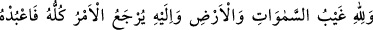
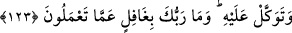
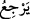
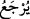

önceki mertebedeki isteklerinin gereği ve oradaki istidadlarının bir neticesidir. Lütuf ve
cemal ehlini de bunlara siz kıyas edin.
Allah Teâlâ peygamberlerine yardım ettiği gibi velilerine ve salih mü’minlere de
yardım etmektedir. Lütuf ve kerem kapılarını onlara açmakta, mertebelerine göre onları
ayak kaymalarından korumakta, sâbit kılıp desteklemekte, kalplerindeki elemleri yok
etmektedir. Sadece müşahedesizlikten doğan elem kalmaktadır.
Hikaye edilir ki bir gence doksan dokuz kamçı vuruldu. Ne bağırıp çağırdı ne de
kimseden yardım istedi. Ancak son kamçıda bağırıp çağırmaya başladı. Şiblî (r.h.) genci
takip etti ve bunun sebebini sordu. Genç cevaben şöyle dedi:
“Kendisi yüzünden kamçılandığım göz, doksan dokuz kamçıyı yediğim sırada bana
bakıyordu. Son kamçıda ise aramıza bir perde girdi.
Mesnevî’de denilir ki:
Pâdişahımız yaygısını nereye yayar, oturursa,
Orası iğne gözü kadar dar olsa bile, bizim için sahrâdır.
Ay gibi parlak yüzlü Yûsuf neredeyse,
İsterse kuyunun dibi olsun, orası bizim için cennettir.
Önemli olan kişinin Hak’la birlikte ve her vakit O’nu müşâhedede olmasıdır.
123. Göklerin ve yerin gaybı (sırrı) yalnız Allah’a aittir. Her iş O’na döndürülür.
Öyleyse O’na kulluk et ve O’na tevekkül et! Rabb’in yaptıklarınızdan gafil
değildir.
“Göklerin ve yerin gaybı” sırrı “yalnız Allah’a âiddir.”
Gayb, lafzı aslında masdardır. Masdarın bir şeye izâfe edilmesi genellik ifade eder.
Yani, yerlerde ve göklerde bilgisi kullara gizli ve gâib kalmış bulunan her şeyin bilgisi,
sadece O’na âiddir. Böyle olduğuna göre nasıl olur da amellerimiz O’na gizli kalır?
“Her iş” sadece “O’na döndürülür.” “ __WORD__ , __WORD__ diye de okunmuştur. O zaman
mânâ şöyle olur: “Bütün yapılanların âkibeti kıyamet günü O’na döner. O halde ey
Muhammed, senin durumun da, kâfirlerin durumu da O’na dönecek ve senin intikamını
onlardan alacaktır.”
“Öyleyse O’na kulluk et”; yani O’na itaat et ve tevhid üzere dosdoğru yaşa, “ve O’na
tevekkül et!” bütün işlerini O’na bırak. O sana yetecek ve seni onların şerrinden
koruyacaktır. Sana düşen, onların beyinsizliğine, düşmanlığına ve haddi aşmalarına